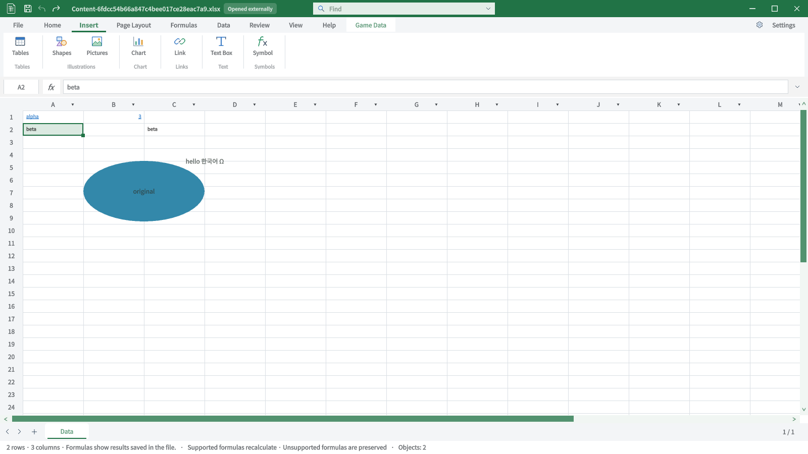
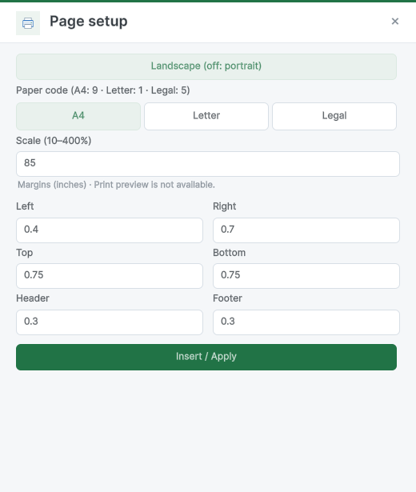
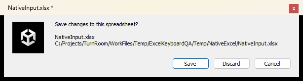
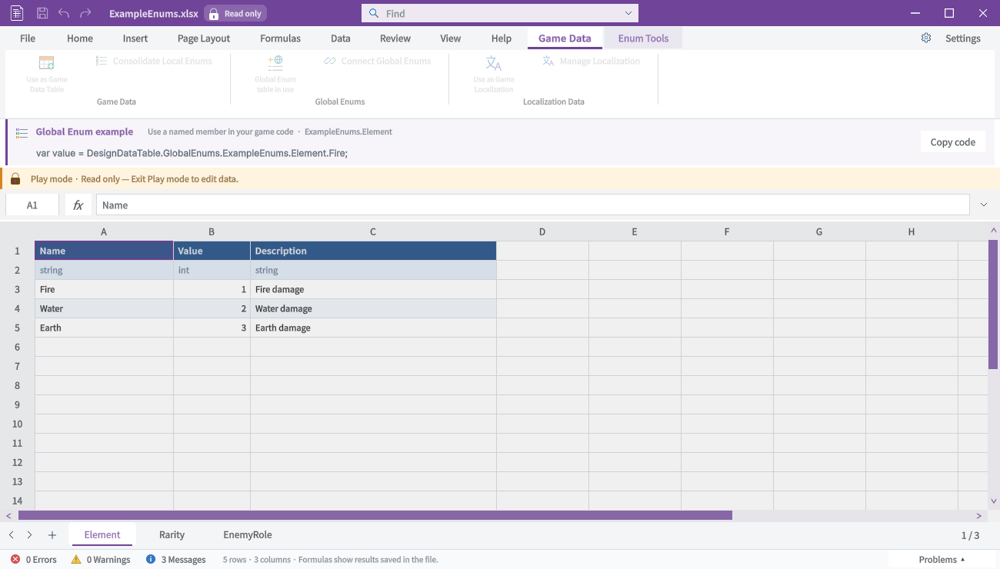

Tracefolio REPORTS & ISSUES
Tracefolio REPORTS & ISSUESExcel 원본229개 재검수와 입력·삽입 오류 수정
검증 대기원본229개를 검수하고 Ctrl+K·동적 배열 링크·텍스트 상자·리본 라벨 문제를 수정·재QA했습니다. 실제 검사와 미구현·미확인을 분리했습니다.
작업 결과
원본 이미지 검수와 확인된 오류의 수정·실행 재QA를 수행했습니다. 최종 Unity3550+53단언·실제 키 입력·화면/문서·무경고 빌드를 검증했습니다. 전체 Excel 동등성·모든 명령 실행 완료는 아닙니다.
변경 내용
적용 내용
| 변경 | 확인한 결과 |
|---|---|
| Ctrl+K | 링크 팝업을 연 같은 키가 Unity 검색에도 전달되던 문제 수정. 이벤트 처리가 끝난 후 팝업을 열도록 변경 |
| 삽입 | 실제 XLSX 링크·투명 텍스트 상자·기호 추가. 수식/기존 값·관계 파일·Undo 보존 |
| 링크 경계 | 범위 링크 한 셀 변경 시 이웃8칸 보존. 동적 배열 시트 링크 추가 거부 수정 |
| Page setup | 방향·용지·여백·10~400% 배율 저장.401%거부·Undo/Redo·재열기 검사 |
| 리본 | AutoSum·채우기·정렬·틀 고정 경로 노출,주소 상자 직접 이동,읽기 전용 통계 |
| UI | 텍스트 상자 두 줄 잘림·페이지 입력 간격·새 글꼴의 두 줄 리본 라벨 잘림 수정 |
| 문서/빌드 | 최신 실촬영41개 교체·9언어 문서 갱신. XML 주석 형식 수정 후 빌드 오류0·경고0 |
현재 소스17개와 QA 프로젝트 일치를 확인했습니다. 별도 기존 DataTableEditor에 들어온 글꼴 호출 변경은 이번 Workbook 화면 실행 결과와 구분했습니다. 다른 작업의 변경은 덮어쓰지 않았습니다.
교훈 검토: 로드된 QA 소스와 현재 제품의 대조,팝업 키 전달,실제 화면 재촬영 근거를 이 프로젝트 기록에 남겼습니다. 전역 지침은 기존 검증·실제 화면 규칙과 중복되어 추가하지 않았습니다.
검증
| 검사 | 결과와 범위 |
|---|---|
| 원본229개 | 전체 육안 분류·검수. 기존 원본/현재31쌍 대조. 다른 Office 앱·비UI 그림·아바타 등을 Excel 탭 증거에서 구분 |
| 현재 화면 | 옵션27개·문서15개·컨텍스트18개·잠금9개=69개 실촬영. 라벨 수정 영향42개 재검수,나머지 옵션27개는 검수 화면과 픽셀 동일 확인 |
| 실제 클릭 | 메인9탭 선택 단언·재촬영. Ctrl+K/Escape10회 재통과,내부 링크 이동·기호 Undo/Redo |
| 실제 입력/닫기 | abcd→Enter→efgh→Tab→ijkl→Enter 값과 이동 확인. 두 줄 텍스트 적용/Undo/Redo/Ctrl+S 및 저장 XML 확인. 닫기 파일명/경로·취소 후dirty 보존·Undo clean 확인 |
| Unity 회귀 | 기존16묶음3550단언 + 신규53단언 통과. 실제 키 입력 검사와 별개인 모델 검사입니다 |
| 컨텍스트/잠금 | 표49검사·게임/로컬Enum/전역Enum/로컬라이징 Play 잠금33검사 통과. 원본 바이트 보존·종료 후 해제 포함 |
| 단축키 목록 | 독립 카탈로그2100검사. 이것만으로 실제 키 입력 통과라 하지 않음 |
| 문서 | 9언어·현재46이미지 해시/의존 소스 통과. 실제 브라우저 깨진 이미지0·가로 넘침0 |
| 빌드 | 최종 전체 C# 컴파일 오류0·경고0 |
| 성능 | ArcadeText80키 송신,활성GUI KeyDown75개 계측. 키 p95 14.96ms/최대37.88ms;repaint p95 18.90ms/최대46.48ms. 중간 포커스 안전 중단 후 이어서 측정했으며 무지연·60fps를 보장하는 판정이 아닙니다 |
동적 배열 링크 검사는 처음 실패했습니다. 실패 증거를 보존하고 보호 조건을 수정한 뒤53검사와3550회귀를 재실행했습니다. 캡처 후 QA 관찰기의 폐기 컨테이너 조회 예외도 제품 오류와 구분해 수정했습니다.
Unity 회귀 · 신규53검사 · 실패→수정 근거 · 네이티브 검사 · 성능 · 빌드 · 문서 · 소스 대조




남은 사항
전체 Excel 동등성은 미완료입니다. 공식4926행은 중복 ID와 메타데이터를 포함하며 실제 고유 명령은2243개입니다. 행별 판정: 지원7행·부분지원106행·미지원1301행·미확인3512행. 지원7행은3개 ID(Undo/Redo/FileSave)의 반복 배치입니다.3512행은 명령별 실제 실행 미확인으로 남깁니다.
피벗·슬라이서·스파크라인·SmartArt·3D 모델·Draw·Office Scripts/VBA 등의 전용 생성·편집 기능과 인쇄 미리보기는 제공하지 않습니다. 이를 다른 기능으로 대체하거나 QA 차단/완료로 바꾸지 않았습니다. 원래27개 작업과 과거 실패 이력을 유지하며 전체 메뉴얼은 진행 상태입니다.
4926행별 근거 · 27케이스 현재/이전 결과 · 229개 이미지 검수 원장
원본 검수판: 01 · 02 · 03 · 04 · 05 · 06 · 07 · 08 · 09 · 10 · 11 · 12 · 13 · 14 · 15 · 16 · 17 · 18 · 19 · 20 · 21 · 22 · 추가1 · 추가2


작업 시간
- 제안 시간: 첫 수정·재QA 결과10~15분. 전체 완료 예상은 미구현 범위 확인 후 갱신한다고 안내했습니다. 이 시간은 전체 작업 완료 약속이 아닙니다.
- 실제로 완료된 시간: 시작2026-10-31 14:41:25 KST. 이번 검수/수정 및 보고서 작성 기록 시점2026-10-31 17:09:54 KST,실제2시간28분29초. 공개 보고서 배포 대기는 별도입니다. 전체 원래 메뉴얼의 완료 시각으로 보고하지 않습니다.
- XERJ: 사용 — 초기 리본 심볼 후보 검색에 사용하고 현재 소스와 대조했습니다. 신규 SetHyperlink 검색/Def는 관련 없는 기존 파일을 반환했고 Index 재시도는 frozen mappings identity 불일치로 실패했습니다. 현재 파일은 rg와 실제 Unity 실행으로 검증했습니다.